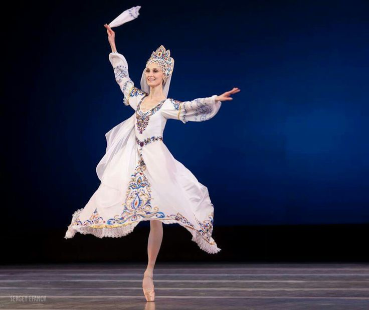
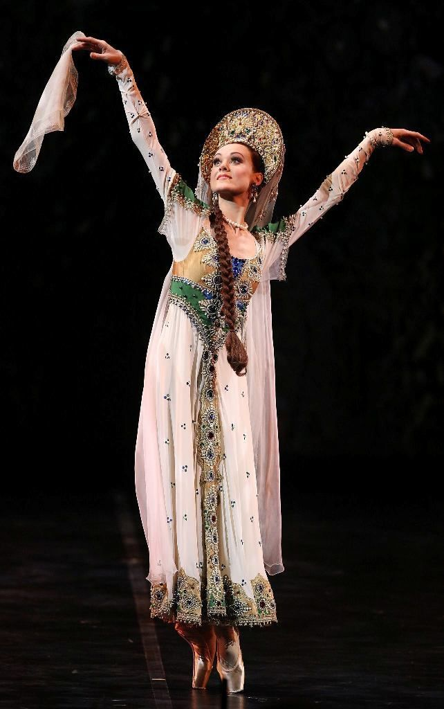
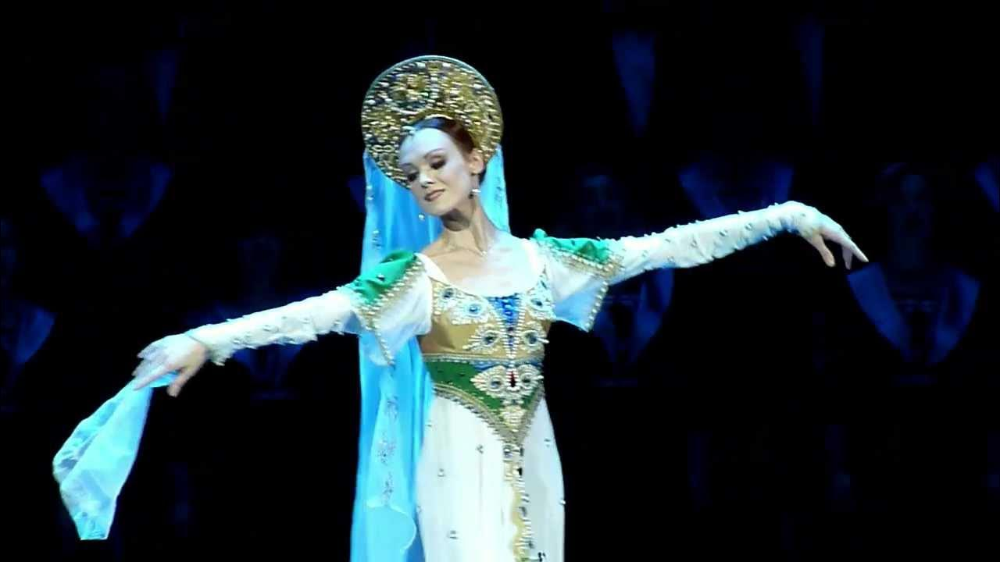
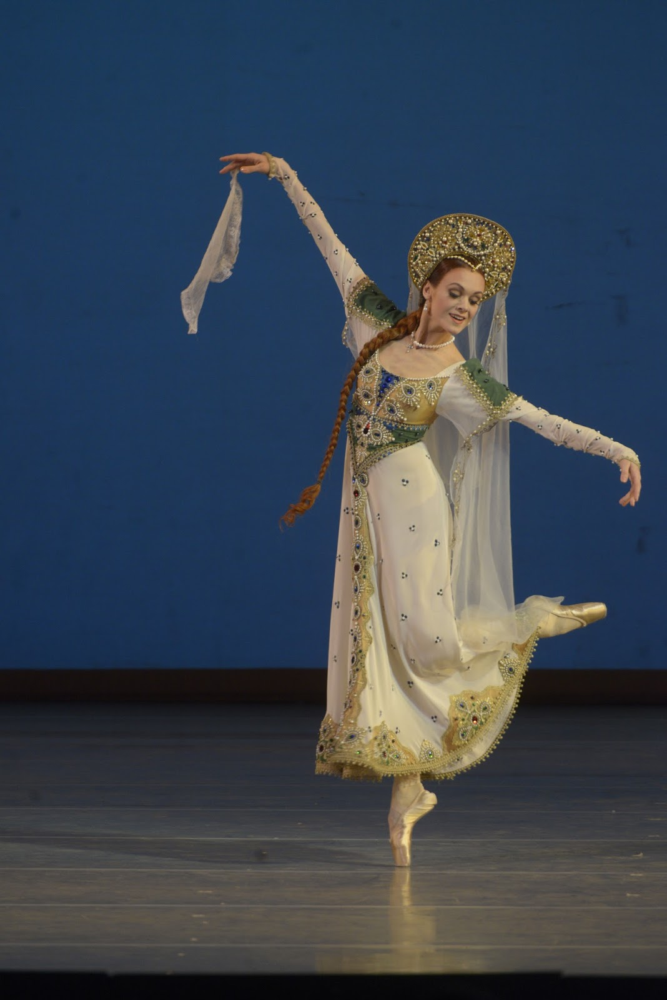
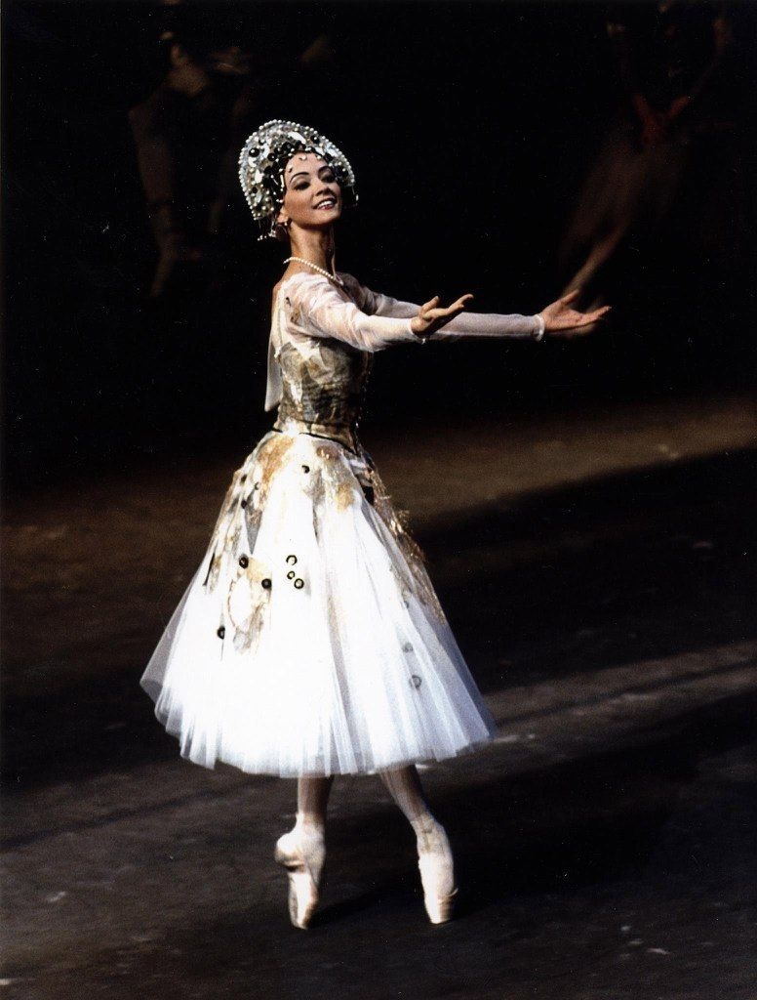
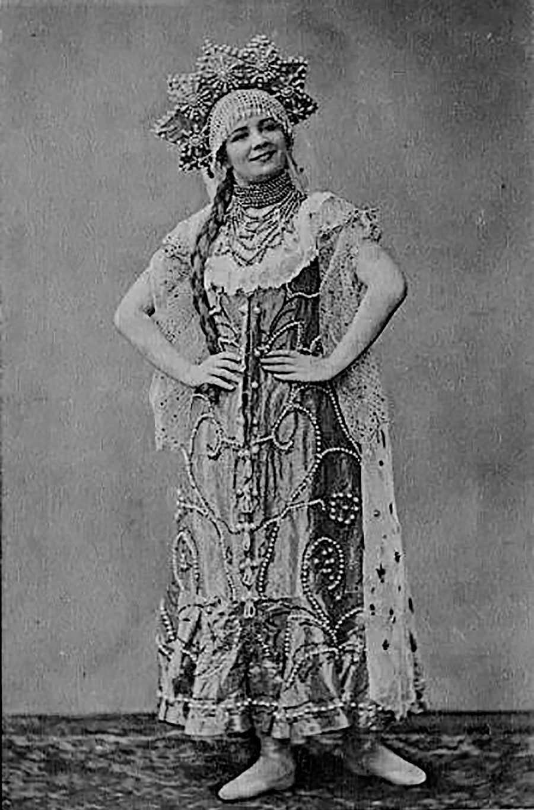
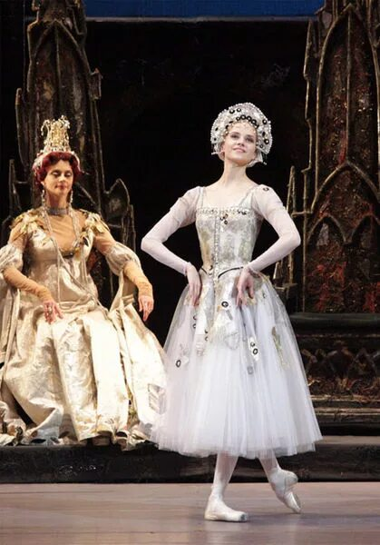
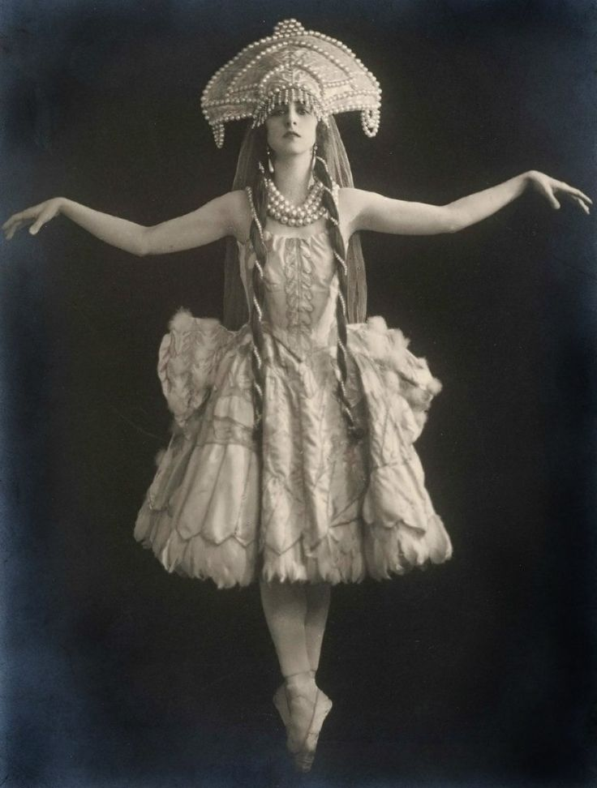
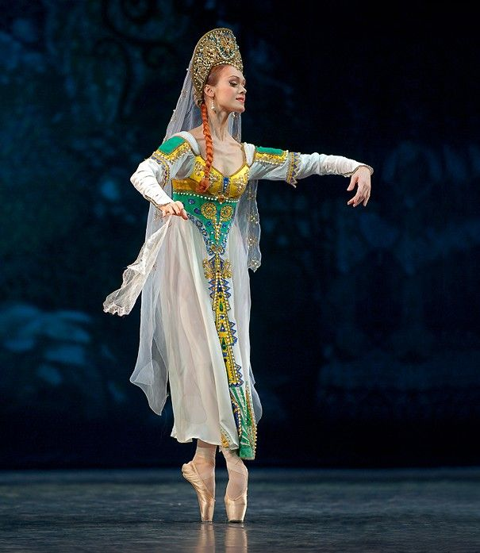

Под «Русским танцем» в балете П. И. Чайковского «Лебединое озеро» обычно понимают музыкальный номер Danse russe (Русский танец), входящий в третий акт балета. Это самостоятельный танцевальный эпизод, который не следует путать с самим балетом. Исторически он относится к числу так называемых характерных танцев, то есть сценических номеров, стилизованных под национальную танцевальную традицию.
Музыка к балету «Лебединое озеро» была написана Петром Ильичом Чайковским в 1875–1876 годах. Премьера состоялась 4 марта 1877 года (20 февраля по старому стилю) в Большом театре Москвы. Хореографом первой постановки был Юлиус Рейзингер. Несмотря на высокий художественный уровень музыки, спектакль не имел большого успеха у публики и критики.
В первоначальной партитуре 1877 года присутствовал специальный номер «Danse russe pour Mlle. Pelageya Karpakova» («Русский танец для мадемуазель Пелагеи Карпаковой»). Его название сохранилось в источниках и современных изданиях партитуры.
В большинстве современных постановок используется редакция 1895 года, созданная хореографами Мариусом Петипа и Львом Ивановым для Мариинского театра в Санкт-Петербурге. Музыкальную редакцию подготовил Риккардо Дриго, который изменил порядок некоторых номеров, сократил часть музыки и внёс ряд корректировок. Поэтому расположение и использование Русского танца в разных спектаклях может отличаться.
Первой исполнительницей партии Одетты в премьере 1877 года была Пелагея (Полина) Карпакова. Именно её имя связано с Русским танцем, поскольку в авторской партитуре номер обозначен как «Danse russe pour Mlle. Pelageya Karpakova». Это позволяет считать Карпакову первой исполнительницей данного номера.
Следует отметить, что точное описание первоначальной хореографии Русского танца не сохранилось, поэтому современные версии могут существенно отличаться от того, что зрители видели в 1877 году.
Действие третьего акта происходит во дворце принца Зигфрида во время бала. Здесь представлены различные национальные танцы, создающие атмосферу праздничного придворного торжества. В разных редакциях балета встречаются испанский танец, венгерский чардаш, неаполитанский танец, мазурка и Русский танец.
Русский танец выполняет несколько художественных задач:
создаёт национальный колорит;
контрастирует с поэтичными и мистическими сценами у озера;
демонстрирует энергию и праздничность действия;
даёт возможность солистам и артистам кордебалета показать техническое мастерство.
Музыка номера написана в духе русской народной плясовой традиции, однако не является прямой обработкой какого-либо конкретного народного танца. Это авторское произведение Чайковского, в котором элементы народной музыкальной стилистики соединены с симфоническим мышлением композитора.
Русский танец отличается ярким ритмом, стремительным развитием и богатой оркестровкой. Исследователи отмечают, что музыка создаёт впечатление звучания народных инструментов и праздничного народного гуляния. Вместе с тем композитор использует сложные симфонические приёмы, характерные для своего зрелого стиля.
Из-за насыщенной оркестровой фактуры пьеса считается достаточно сложной как для оркестрантов, так и для исполнителей фортепианных переложений.
Первоначальный сценарий «Лебединого озера» был создан как двухактный балет, однако в дальнейшем произведение неоднократно перерабатывалось и приобрело привычную современную структуру.
Русский танец присутствовал уже в партитуре первой постановки 1877 года и был связан с именем Пелагеи Карпаковой.
Наибольшую известность «Лебединое озеро» получило не после премьеры, а после знаменитого возобновления 1895 года в постановке Петипа и Иванова.
В различных редакциях балета Русский танец может исполняться как сольный номер, дуэт или ансамблевый дивертисмент.
Утверждение о том, что партию Русского танца в постановке 1895 года впервые исполняла Агриппина Ваганова, документально не подтверждается. На момент премьеры 1895 года Ваганова ещё не являлась ведущей исполнительницей этой партии, поэтому подобное утверждение считается исторически недостоверным. Данный факт был исключён из итогового текста.
Русский танец из балета «Лебединое озеро» представляет собой яркий образец характерного танца в классическом балете. Созданный Чайковским для первой исполнительницы Одетты Пелагеи Карпаковой, этот номер со временем стал частью мировой балетной традиции. Сегодня он воспринимается не только как эффектный концертный эпизод, но и как важная часть истории одного из самых известных балетов в мире.
Особое место в истории сценического воплощения «Русского танца» из балета «Лебединое озеро» занимает редакция советского хореографа Касьяна Ярославовича Голейзовского. В 1966 году балетмейстер создал самостоятельную концертную постановку на музыку «Русского танца» П. И. Чайковского, которая впоследствии получила широкое распространение в концертном и учебном репертуаре.
В отличие от традиционных академических трактовок, хореограф стремился не к буквальному воспроизведению русской народной пляски, а к созданию художественного сценического образа, основанного на синтезе классического балета и народно-сценической пластики. Исследователи отмечают, что в хореографии Голейзовского нашли отражение его глубокий интерес к культуре Востока и Средней Азии, что проявилось в своеобразии поз, движений рук и общей пластической выразительности танца.
Постановка отличается виртуозной техникой исполнения, сложной координацией движений и яркой эмоциональной выразительностью. Хореограф сумел подчеркнуть характер музыки Петра Ильича Чайковского, соединив энергичность народного танца с высокой балетной культурой исполнения. В результате был создан сценический номер, который приобрёл самостоятельную художественную ценность и стал исполняться отдельно от полного спектакля «Лебединое озеро».
На протяжении многих лет «Русский танец» в редакции Голейзовского входил в репертуар советских и российских артистов балета. Сохранились сведения о его популярности в концертных программах, а также о том, что номер неоднократно исполнялся известными балеринами второй половины XX века.
В настоящее время данная редакция рассматривается как значимый образец хореографического наследия Касьяна Ярославовича Голейзовского и широко используется в образовательной практике хореографических училищ, колледжей искусств и детских школ искусств. Исследователи отмечают, что «Русский танец» является одной из наиболее востребованных миниатюр из творческого наследия балетмейстера.
Значение редакции Касьяна Ярославовича Голейзовского заключается в следующем:
сохранение интереса к редко исполняемому номеру из первоначальной партитуры балета «Лебединое озеро»;
превращение «Русского танца» в самостоятельную концертную миниатюру;
развитие традиций характерного танца в отечественном балетном искусстве;
включение произведения в систему профессионального хореографического образования.
Таким образом, редакция «Русского танца», созданная Касьяном Ярославовичем Голейзовским, сыграла важную роль в сохранении и популяризации этого номера. Благодаря данной постановке произведение Петра Ильича Чайковского получило самостоятельную сценическую жизнь и вошло в золотой фонд отечественного хореографического искусства.








